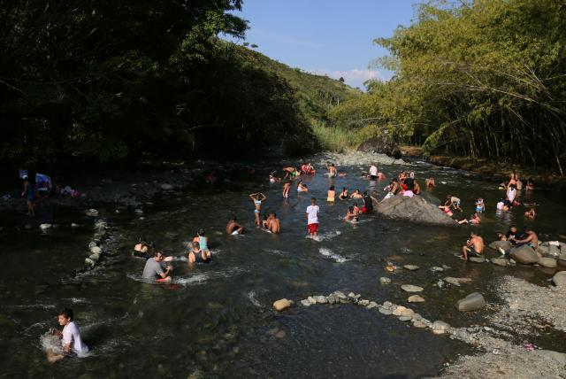

Cultura en el río pance
La cultura en el área del río Pance, ubicada en el departamento del Valle del Cauca en Colombia, se
caracteriza por su diversidad cultural. Influenciada por tradiciones indígenas, afrocolombianas y
mestizas, la región destaca por su música y danza, que incluye ritmos tradicionales y danzas
folclóricas. La gastronomía local ofrece platos típicos como la bandeja paisa y las empanadas
vallunas. La artesanía, los festivales culturales, la espiritualidad arraigada en la naturaleza y el
respeto por el entorno ambiental son componentes esenciales de esta cultura. La arquitectura
colonial y el patrimonio histórico también enriquecen la identidad cultural de la región.